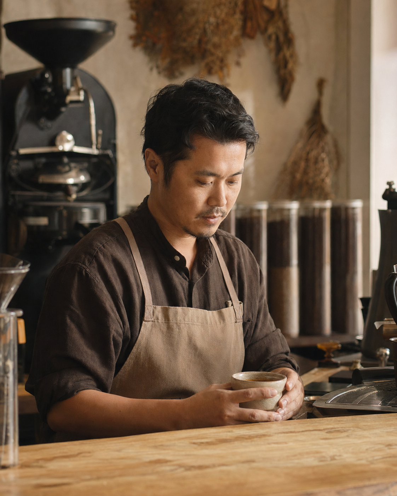

返回 CH6 模板速查站
(C4)
Founder Portrait 創辦人肖像
創辦人 / 個人品牌 / 專業顧問的肖像照——不是大頭照、是「有故事感的人物照」。LinkedIn 進階用、品牌官網「關於我們」、訪談媒體投稿、Substack 個人主圖最高頻。重點是「氛圍 + 個性」、不是「拍得好看」。
這張卡片你會學到
能判斷何時用 founder portrait（與證件照 / 大頭照差異）
能拆解 6 段並安排人物與環境的故事感
能識別 4 種踩雷（人臉太正面／環境不對／表情假笑／光線太硬）
(01)
適用場景
這個模板用在哪
創辦人 / 個人品牌肖像照。重點不是「拍得好看」、是「有故事感」——人物在自己的工作場域（咖啡店、辦公桌、工作室）、自然動作（思考 / 看遠方 / 操作工具）、暖光氛圍。比大頭照有溫度、比形象照有真實感。
典型客戶 / 交付物 個人品牌經營者 / SOHO 創業者、單次接案 NT$3,000-8,000、交付：氛圍提案版本（最終建議真人實拍替換）
四個典型用途：
- 品牌官網 About Us 主圖（創辦人 / 老闆出鏡建立信任）
- LinkedIn 進階個人形象照（顧問 / 自由工作者 / 創業者）
- 訪談媒體投稿照（天下雜誌、報導者、女人迷）
- Substack / Newsletter 個人主圖（創作者建立個人 IP）
| 對比項 | 本卡片 · C4 Founder Portrait 創辦人肖像 | 近似模板 |
|---|---|---|
| 拍攝目的 | 故事感 + 個性 + 信任 | 證件照：規格化；大頭照：辨識度 |
| 人物姿態 | 自然動作（看遠方 / 操作 / 思考） | 證件照：直視；大頭照：微笑 |
| 環境 | 必含工作場域元素 | 證件照：純白底；大頭照：簡約底 |
| 光線 | 暖自然光、有方向性 | 證件照：均勻硬光 |
| 構圖 | 半身或 3/4 身、留白給場域 | 證件照：頭肩；大頭照：胸上 |
| 臉部 | 可側面、可低頭、不一定正面 | 證件照：必正面；大頭照：必微笑 |
一句話判斷：客戶問「能不能拍張我的形象照」（要放官網 / 訪談）走 C4；問「LinkedIn 大頭照」用 portraits-and-characters/professional-portrait（更標準化）；問「員工大頭照」用大頭照模板。C4 是個人品牌經營者最值得投資的卡片——一張好的 founder portrait 能用 2-3 年。
(02)
模板拆解｜6 段 prompt 結構
founder portrait 6 段。核心難度在「自然感」——AI 給人物的姿勢和表情容易僵硬、像 stock photo：
| 段 | 段落 | 必問還是可預設 | 填什麼 |
|---|---|---|---|
| 1 | subject 人物 | 必問 | 性別 + 年齡範圍 + 種族 + 職業 + 個性（嚴肅 / 親切 / 沉穩） |
| 2 | pose 姿態 | 必問 | 動作（看遠方 / 操作工具 / 翻書 / 倒咖啡）；身體角度（正面 / 3/4 / 側面） |
| 3 | facial 臉部 | 必問 | 表情（微笑 / 思考 / 平靜）；視線方向（看鏡頭 / 看遠 / 看手中物）；可側面或半遮 |
| 4 | environment 環境 | 必問 | 場域（咖啡店 / 辦公桌 / 工作室 / 戶外）+ 環境道具（電腦 / 咖啡 / 書） |
| 5 | lighting 光線 | 必問 | 自然光（窗光 / 戶外）+ 方向（側光 / 逆光）+ 色溫（暖 / 中性） |
| 6 | constraints 限制 | 固定寫死 | 禁忌：假笑、硬光、stock photo 感、過度修圖、純白底（不是大頭照） |
記憶口訣：人物 → 姿態 → 臉 → 環境 → 光 → 禁。新手最常踩「假笑＋直視鏡頭」——這就變大頭照不是 portrait。明確寫「looking off-camera」「subtle expression, not posed smile」「natural candid moment」。
(03)
示範圖｜可複製、可重現
下面這張是 OPEN BEANS 創辦人在自家咖啡店的形象照。男性 30s、台灣人、坐在咖啡吧台後方、看著手中的咖啡杯（不直視鏡頭）、暖色側光、自然動作。可放品牌官網 About。

完整 prompt · OPEN BEANS 創辦人咖啡店形象照
請生成一張創辦人 / 個人品牌肖像照（founder portrait）： 【人物】亞洲男性、30-40 歲、台灣人、精品咖啡店創辦人、個性沉穩專注。 【姿態】半身構圖、坐在自家咖啡店吧台後方、身體角度 3/4 側對鏡頭、雙手輕扶咖啡杯。 【臉部】表情自然平靜、不要笑、視線朝下看著手中手沖咖啡杯（不要直視鏡頭）。可有極淡微笑感（眼神專注）。 【環境】自家精品咖啡店吧台、米色木紋桌面、背景虛化（淺景深）：可見輪廓的烘豆機、深棕色咖啡豆儲存罐、垂掛的乾燥植物。 【服裝】深棕色襯衫 + 米色工作圍裙（咖啡職人感）。袖子捲起。 【光線】自然光 + 暖色側光（從右側窗戶灑入）、明顯方向性、營造黃昏前的咖啡店氛圍。 【相機感】像用 35mm 全幅 + 50mm 鏡頭拍攝、輕微膠片顆粒、商業攝影級。 【風格】真實人文紀實感、不要過度修圖、不要美顏濾鏡、不要 stock photo 感。 【限制】嚴禁直視鏡頭（會變大頭照不是 portrait）、嚴禁假笑、嚴禁純白底、嚴禁硬光、嚴禁工作場域以外的元素（不要花、不要書、不要其他人）、嚴禁中文字。
讀圖時看這 4 個點：(1) 視線方向有沒有「不直視」（看遠 / 看物 / 看下）？(2) 環境是不是「他真的在那裡」（不是合成感）？(3) 表情自然嗎（不假笑、不僵硬）？(4) 光線方向明確嗎（不是均勻硬光）？
(04)
改成你的場景｜踩雷與失敗案例
把 prompt 拿來、改 3 個替換槽就變你的版本：
| 替換槽 | 你的版本 |
|---|---|
| ⓐ 人物 = ?（性別 + 年齡 + 職業） | 例：亞洲男性 35 歲咖啡職人 / 亞洲女性 40 歲設計顧問 |
| ⓑ 環境 = ?（自己的工作場域） | 例：咖啡店吧台 / 設計工作室桌前 / 教練在健身房 / 顧問辦公桌 |
| ⓒ 動作 = ?（自然動作） | 例：扶咖啡杯 / 看筆記 / 操作機器 / 整理工具 |
最常見的 4 種踩雷：
- 假笑 + 直視鏡頭 AI 給你的「微笑直視」變成大頭照不是 portrait。解法：明確寫「looking off-camera」「subtle, focused expression, not posed smile」「captured candid moment」。
- 環境太空洞 純白底 / 灰漸變 = 大頭照感、不是 founder portrait。解法：明確寫「subject in their actual workspace」「real environmental elements (tools, products, space)」「shallow depth of field with environmental context」。
- 光線太硬 AI 預設給均勻 4500K 光、感覺像棚拍——不像「他在自然環境裡」。解法：明確寫「natural window light, warm side lighting, golden hour quality」、避免「studio lighting」。
- AI 人臉的不可控 imagegen 對人臉細節（不對稱、年齡、種族特徵）不穩定。C4 的最佳策略：把 AI 生成版本當「氛圍提案」給客戶看「你大概會長這樣的感覺」、實際交付的成品建議真人實拍。或請客戶提供照片、用 image-to-image 換背景與光線。從不要把純 AI 生成的 founder portrait 當成正式交付品——客戶若用在官網被識別出是 AI 生成、商業信譽會受損。
實戰提醒：C4 是 C 組裡最不適合純 AI 交付的卡片。建議客戶：「用 AI 探索氛圍方向、確定後找在地攝影師按這個 mood board 拍 1 張」。攝影師費 NT$5000-15000、加你 prompt 顧問費 NT$3000、客戶得到「真實 + 對方向」雙贏。
交付提醒 本卡片的 imagegen 示範圖不是可直接給客戶的最終交付品。中文商業案一律先用 imagegen 出構圖（含英文 placeholder）、再走 後製字體疊圖工作流 在 Figma／Canva 疊上中文、最後校稿確認才交付給客戶。
本卡片改寫自 ConardLi／garden-skills 之
founder-portrait.md 模板（MIT License、2026），已對中文進行台灣用語在地化、加入本地接案情境與失敗案例。